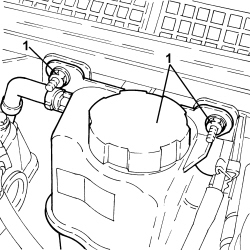
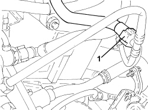
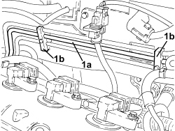
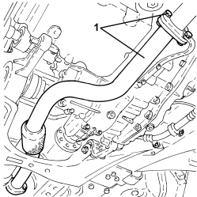
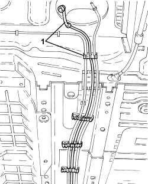

1040B52 FUEL RETURN PIPE (ONE) - R.R.
- Path
- Procedures > 10 ENGINE > 1040 FUEL TANK AND PIPES > 1040B FUEL SUPPLY/RETURN CIRCUIT PIPE > 1040B52 FUEL RETURN PIPE (ONE) - R.R.
- Kind
- repair procedure (removal / refitting; the operation number is the code)
- Applies to
- engines: 3.2 JTS; all production periods
- Interactive page
- https://sloeber94.github.io/elrnDB-aBrrSpdr/en/#/946001890
Applies to: engines: 3.2 JTS; all production periods
 Removing
Removing
 Refitting
RefittingOp. 4450B13 REAR WHEELS (TWO) - R.R
Op. 2720C10 DIFFERENTIAL UNIT - R.R.
Op. 2410A18 TRANSMISSION WITH JOINTS INCLUDED - R.R.
Op. 1040A10 FUEL TANK - R + R AND DECANT FUEL
Op. 1040E22 FUEL PIPE PROTECTION - R.R
Op. 1072B50 AIR CHAMBER - R.R.
1. Undo the fixing nuts and move the engine coolant reservoir to one side.

Applies to: engines: 3.2 JTS; all production periods
1. Disconnect the fuel return pipe quick coupling from the three-way connector.

Applies to: engines: 3.2 JTS; all production periods
1. Release rigid section of fuel return pipe (1a) from fastening clips (1b).

Applies to: engines: 3.2 JTS; all production periods
- Undo the fastenings and remove the electrical connections protection.
1. Detach the electrical connection for the left head catalytic converter Lambda sensor.
Description | Connector | |
|---|---|---|
1 | Lambda sensor on catalytic converter - 2 |
2. Detach the electrical connection for the right head catalytic converter Lambda sensor.
Description | Connector | |
|---|---|---|
2 | Lambda sensor on catalytic converter |
3. Undo nuts (3a) and remove catalytic converter assembly (3b).
- Remove the metal gaskets.

Applies to: engines: 3.2 JTS; all production periods
1. Undo the bolts and remove the front section of the exhaust from the left head preconverter.
- Remove the metal gasket.

Applies to: engines: 3.2 JTS; all production periods
1. Release the fuel return pipe from the underbody fastenings and remove it.

Applies to: engines: 3.2 JTS; all production periods
Refitting
Removing- Place the fuel return pipe in position, fasten it to the bodyshell using the clips and attach it to the three-way connector.
- Place the front section of the exhaust and the gasket in position and connect it to the preconverter using the bolts.
- Place the catalytic converter assembly and gaskets in position and connect to the two front exhaust pipes, using the fixing nuts.
- Attach the electrical connections for the two Lambda sensors and fit the guard.
- Place the engine coolant reservoir on its bracket and secure it using the nuts.
Op. 1072B50 AIR CHAMBER - R.R.
Op. 1040E22 FUEL PIPE PROTECTION - R.R
Op. 1040A10 FUEL TANK - R + R AND DECANT FUEL
Op. 2410A18 TRANSMISSION WITH JOINTS INCLUDED - R.R.